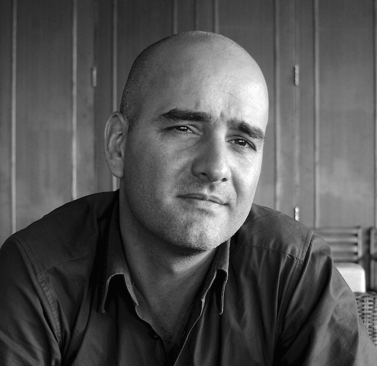

Contact :
+33(0)6.95.51.46.79
Download un portfolio - CORPORATE - PORTRAIT
Demander un devis
---- FR -----------------------
Après avoir travaillé un peu plus de 10 ans au sein de grands groupes et de start-ups, je pars faire un long voyage autour du monde pendant près de deux ans. Je rentre alors en France avec quelques milliers de photos et la conviction que ma voie est là : écrire, raconter, témoigner avec des images et des mots. Je commence alors en 2014 par apprendre à coder au sein du Dev Bootcamp Le Wagon, puis je perfectionne ma technique photographique aux Gobelins, l'école de l'image, en 2014/2015. Et enfin, je décide de suivre en 2015/2016 le cursus photojournalisme au sein de l'EMI CFD.
Aujourd'hui Photographe professionnel indépendant basé à Nantes en Loire-Atlantique, je travaille en commande pour la Presse, les Institutionnels, les Entreprises et les particuliers.
Membre du studio HANS LUCAS depuis août 2017.
Carte de Presse n°127141
Membre de la SAIF - Société des Auteurs des arts visuels et de l’Image Fixe.
---- UK -----------------------
After working a little more than 10 years in large groups and start-ups, I go on a long trip around the world for almost two years. I then go back to France with a few thousand photos and the conviction that my path is there: to write, to tell, to testify with images and words. In 2014, I started learning how to code in the Dev Bootcamp Le Wagon, then I perfected my photographic technique at Gobelins, the school of image, in 2014/2015. And finally, I decided to follow in 2015/2016 the photojournalism course within the EMI CFD.
Today, I am a freelance professional photographer based in Nantes, working on commission for the Press, Institutionals, Companies and individuals.
Member of HANS LUCAS studio since August 2017.
Press Card n°127141
Membre de la SAIF - Society of Authors of Visual Arts and Still Image.
-- MEDIA ------ Financial Times-Le Figaro-Le Parisien-Aujourd'hui en France-La Croix-LSA-Pélerin-Télérama-Les Jours-Alternatives économiques-Le Moniteur-